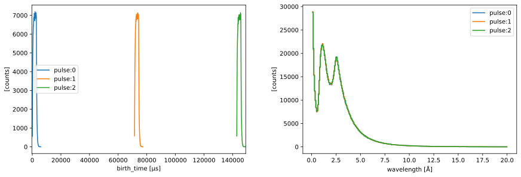
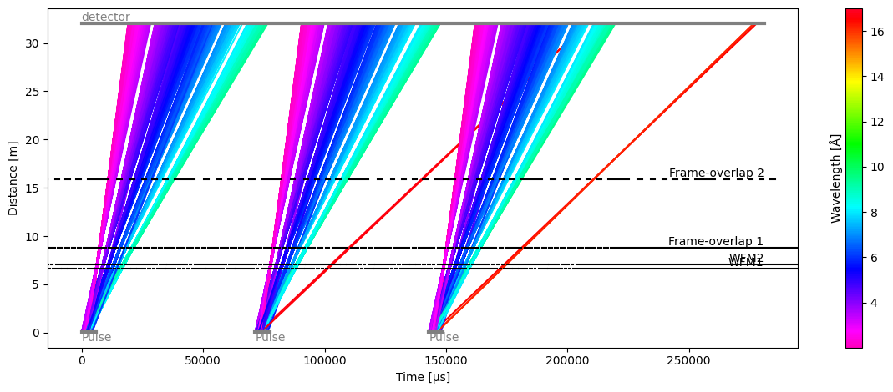
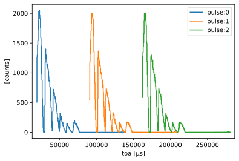
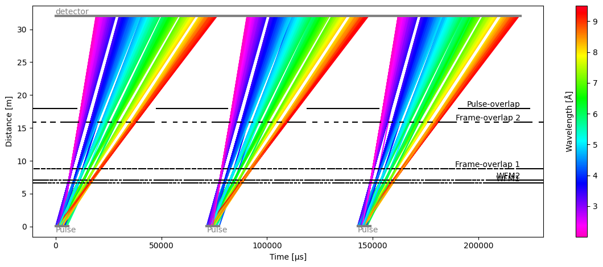
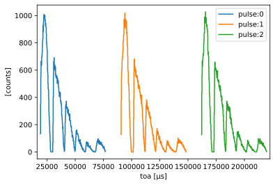
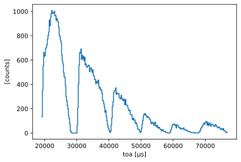

Multiple pulses#
This notebook will illustrate how to use multiple pulses in a model.
[1]:
import scipp as sc
import tof
Hz = sc.Unit('Hz')
deg = sc.Unit('deg')
meter = sc.Unit('m')
Create a source with 3 pulses#
We first create an ESS source with 3 pulses, each containing 1 million neutrons, using the pulses argument.
[2]:
source = tof.Source(facility='ess', neutrons=1_000_000, pulses=3)
source
Downloading file 'ess/ess.h5' from 'https://public.esss.dk/groups/scipp/tof/2/ess/ess.h5' to '/home/runner/.cache/tof'.
[2]:
Source:
pulses=3, neutrons per pulse=1000000
frequency=14.0 Hz
facility='ess'
distance=0.05 m
[3]:
source.plot()
[3]:

Chopper and detector set-up#
We create two WFM choppers, and two frame-overlap choppers, and a single detector 32 meters from the source.
[4]:
choppers = [
tof.Chopper(
frequency=70.0 * Hz,
open=sc.array(
dims=['cutout'],
values=[98.71, 155.49, 208.26, 257.32, 302.91, 345.3],
unit='deg',
),
close=sc.array(
dims=['cutout'],
values=[109.7, 170.79, 227.56, 280.33, 329.37, 375.0],
unit='deg',
),
phase=47.10 * deg,
distance=6.6 * meter,
name="WFM1",
),
tof.Chopper(
frequency=70 * Hz,
open=sc.array(
dims=['cutout'],
values=[80.04, 141.1, 197.88, 250.67, 299.73, 345.0],
unit='deg',
),
close=sc.array(
dims=['cutout'],
values=[91.03, 156.4, 217.18, 269.97, 322.74, 375.0],
unit='deg',
),
phase=76.76 * deg,
distance=7.1 * meter,
name="WFM2",
),
tof.Chopper(
frequency=56 * Hz,
open=sc.array(
dims=['cutout'],
values=[74.6, 139.6, 194.3, 245.3, 294.8, 347.2],
unit='deg',
),
close=sc.array(
dims=['cutout'],
values=[95.2, 162.8, 216.1, 263.1, 310.5, 371.6],
unit='deg',
),
phase=62.40 * deg,
distance=8.8 * meter,
name="Frame-overlap 1",
),
tof.Chopper(
frequency=28 * Hz,
open=sc.array(
dims=['cutout'],
values=[98.0, 154.0, 206.8, 254.0, 299.0, 344.65],
unit='deg',
),
close=sc.array(
dims=['cutout'],
values=[134.6, 190.06, 237.01, 280.88, 323.56, 373.76],
unit='deg',
),
phase=12.27 * deg,
distance=15.9 * meter,
name="Frame-overlap 2",
),
]
detectors = [
tof.Detector(distance=32.0 * meter, name='detector'),
]
Results#
We combine the source, choppers, and detectors into our model, and then use the .run() method to execute the ray-tracing simulation.
[5]:
model = tof.Model(source=source, choppers=choppers, detectors=detectors)
res = model.run()
res
[5]:
Result:
Source: 3 pulses, 1000000 neutrons per pulse.
Choppers:
WFM1: visible=695987, blocked=2304013
WFM2: visible=377636, blocked=318351
Frame-overlap 1: visible=289967, blocked=87669
Frame-overlap 2: visible=205620, blocked=84347
Detectors:
detector: visible=205620
[6]:
res.plot(visible_rays=5000)
[6]:
Plot(ax=<Axes: xlabel='Time [μs]', ylabel='Distance [m]'>, fig=<Figure size 1200x480 with 2 Axes>)

The time-distance diagram reveals that a small number of long-wavelength neutrons from one pulse are polluting the counts detected by the detector for the next pulse (red lines).
The overlap is also visible when plotting the data seen by the detector, even though the number of polluting neutrons is very small (the tails of each pulse are almost flat).
[7]:
res.detectors['detector'].toa.plot()
[7]:

To try and obtain as clean as possible of a detector signal, we include an additional chopper in the beamline to remove pulse overlap:
[8]:
pol = tof.Chopper(
frequency=14 * Hz,
open=sc.array(
dims=['cutout'],
values=[50.0],
unit='deg',
),
close=sc.array(
dims=['cutout'],
values=[240.0],
unit='deg',
),
phase=0 * deg,
distance=18 * meter,
name="Pulse-overlap",
)
model.add(pol)
res = model.run()
res.plot(visible_rays=5000)
[8]:
Plot(ax=<Axes: xlabel='Time [μs]', ylabel='Distance [m]'>, fig=<Figure size 1200x480 with 2 Axes>)

We can now see that the pulses do not overlap at the detector, and this is confirmed in the detector plot
[9]:
res.detectors['detector'].toa.plot()
[9]:

Data inspection#
The detector and the chopper readings have a pulse dimension.
[10]:
res.detectors['detector'].toa.data
[10]:
- pulse: 3
- event: 1000000
- toa(pulse, event)float64µs3826.037, 2.769e+04, ..., 1.552e+05, 1.512e+05
Values:
array([[ 3826.03712019, 27687.37573294, 4523.98449401, ..., 16946.45341393, 25467.78716942, 23203.9098839 ], [101938.93163925, 101378.19946455, 98879.78711376, ..., 80191.53195885, 83672.51344844, 81629.41559876], [156136.40834023, 154439.29538208, 170693.31627588, ..., 196159.58068269, 155178.83948772, 151189.37952713]], shape=(3, 1000000))
- (pulse, event)float64counts1.0, 1.0, ..., 1.0, 1.0
Values:
array([[1., 1., 1., ..., 1., 1., 1.], [1., 1., 1., ..., 1., 1., 1.], [1., 1., 1., ..., 1., 1., 1.]], shape=(3, 1000000))
- blocked_by_others(pulse, event)boolTrue, True, ..., True, True
Values:
array([[ True, True, True, ..., True, True, True], [ True, True, True, ..., True, True, True], [ True, True, True, ..., True, True, True]], shape=(3, 1000000))
It is possible to inspect just a single pulse using the usual slicing notation ['pulse', 0] for an array:
[11]:
res.detectors['detector'].toa['pulse', 0].data
[11]:
- event: 1000000
- toa(event)float64µs3826.037, 2.769e+04, ..., 2.547e+04, 2.320e+04
Values:
array([ 3826.03712019, 27687.37573294, 4523.98449401, ..., 16946.45341393, 25467.78716942, 23203.9098839 ], shape=(1000000,))
- (event)float64counts1.0, 1.0, ..., 1.0, 1.0
Values:
array([1., 1., 1., ..., 1., 1., 1.], shape=(1000000,))
- blocked_by_others(event)boolTrue, True, ..., True, True
Values:
array([ True, True, True, ..., True, True, True], shape=(1000000,))
[12]:
res.detectors['detector'].toa['pulse', 0].plot()
[12]:
